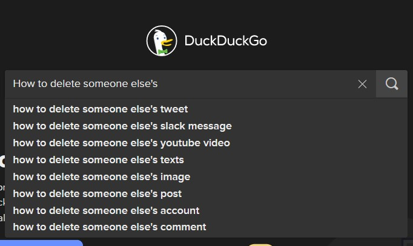
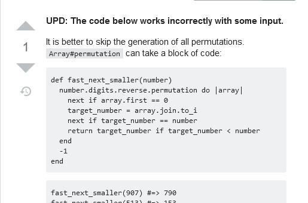

Today I was reading a post on the StackOverflow blog when I was struck by this passage:
require_so: DRYer StackOverflow copying
Copying code from Stack Overflow is a form of code cloning
Code cloning, you say? In my DRY Ruby codebase? Not if I can help it!
And so I got to work. After extensive research, I concluded that deleting the snippet from StackOverflow to make my version the canonical one was not a viable option.

So I flipped the problem on its head: why not make the StackOverflow version the canonical one? And thus, require_so was born.
How do I use it?
Locate the code snippet

It’s right there
Copy the short permalink below the StackOverflow answer
Paste it into your code
require "require_so"
require_so "https://stackoverflow.com/a/61879644"And voilà, the methods defined in the snippet will be brought into scope.
fast_next_smaller(907) #=> 790No more code cloning!